projet d'édition de 90 pages, dont j'ai assuré la mise en page et l'assemblage par une reliure copte.
on y retrouve un condensé de mon univers visuel et graphique, principalement inscrit dans des tons monochromes et où les couleurs sont presque un secret.
il donne à voir divers projets scolaires et personnels mettant en œuvre différents médiums comme la photo, la peinture, le dessin, le montage photo etc…
certains projets sont modifiés, d’autres épargnés, mais le tout s’orchestre dans une ambiance à la fois sombre et élégante.
scroll à l'horizontal →

 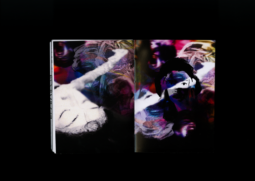
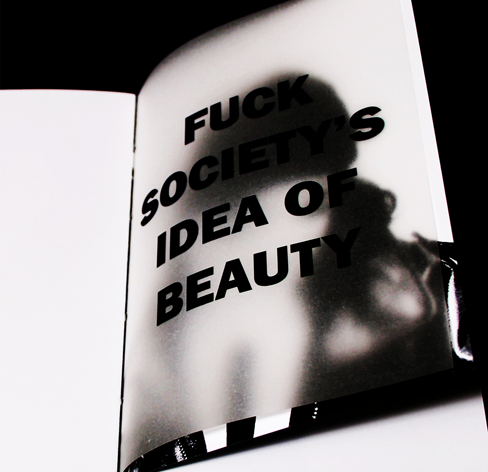
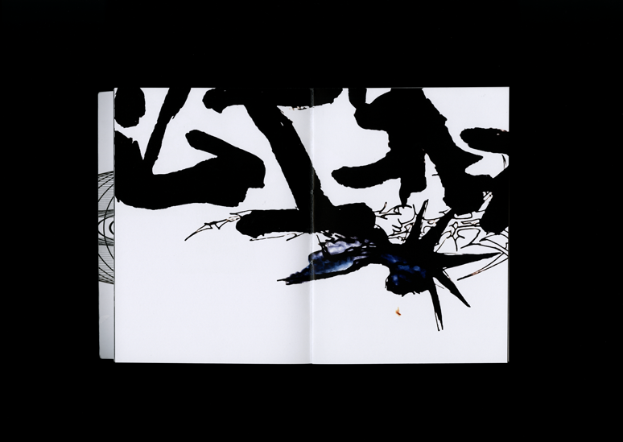
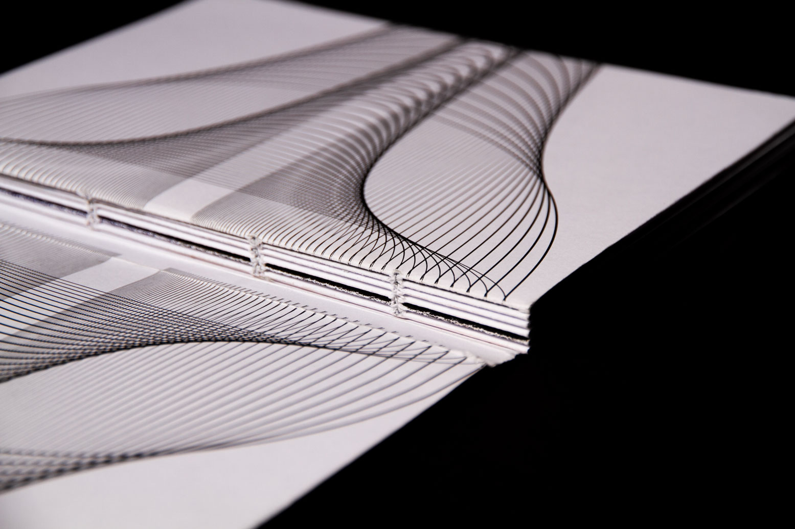
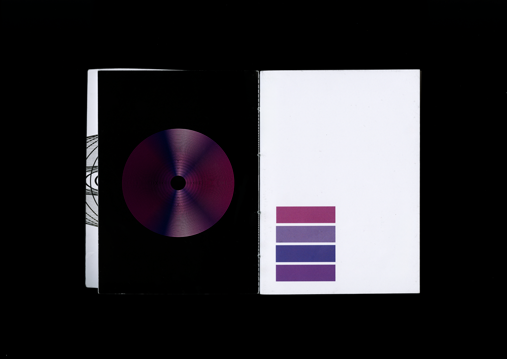
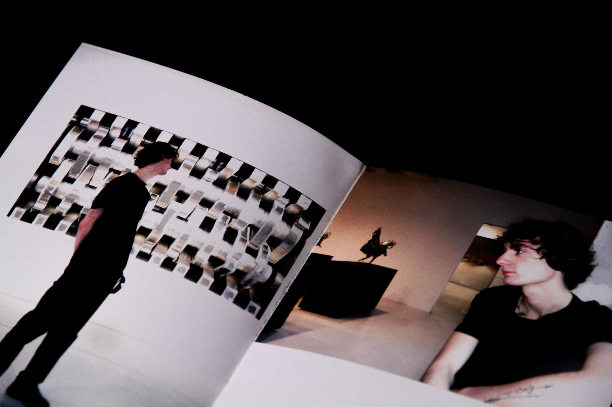
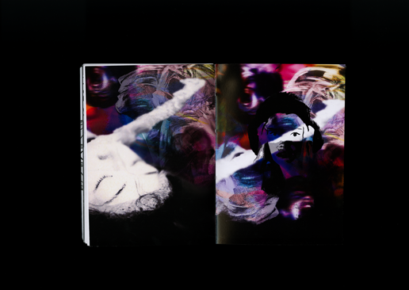
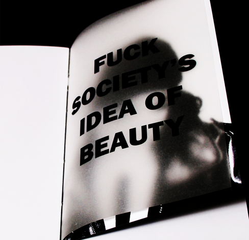
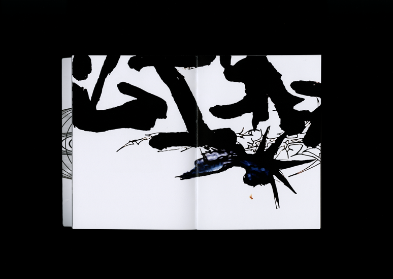
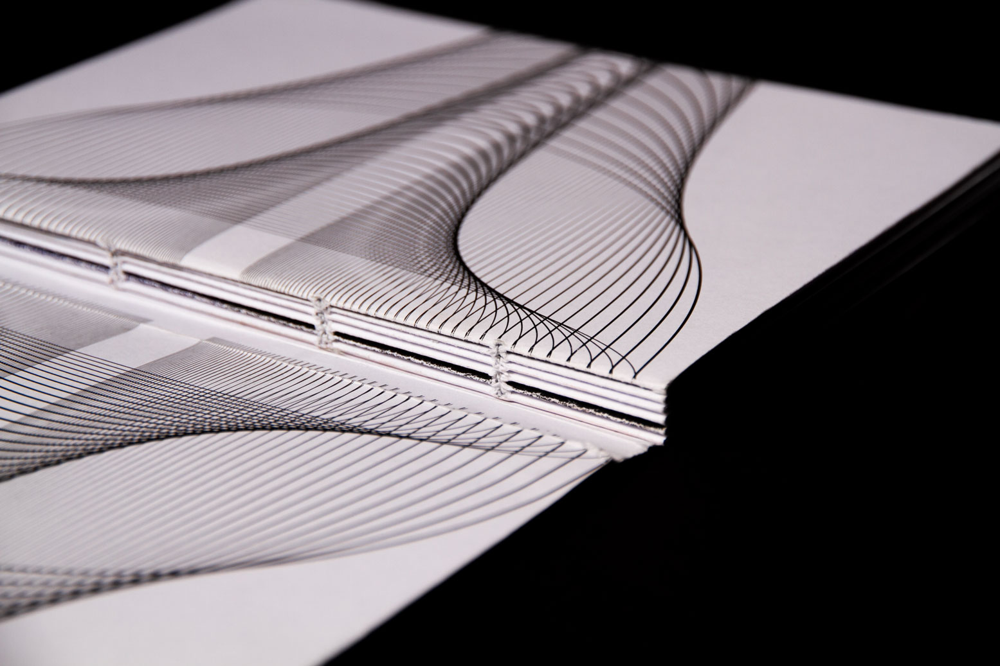
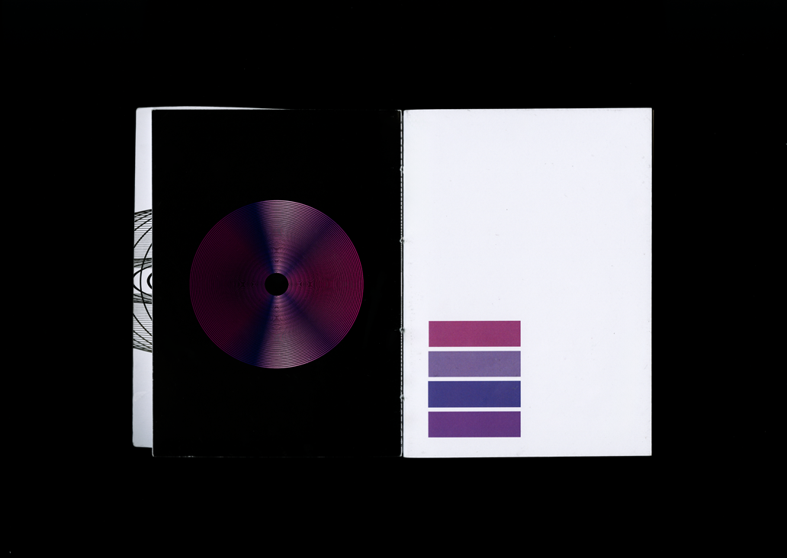
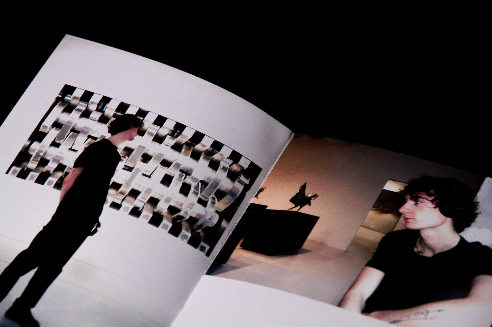